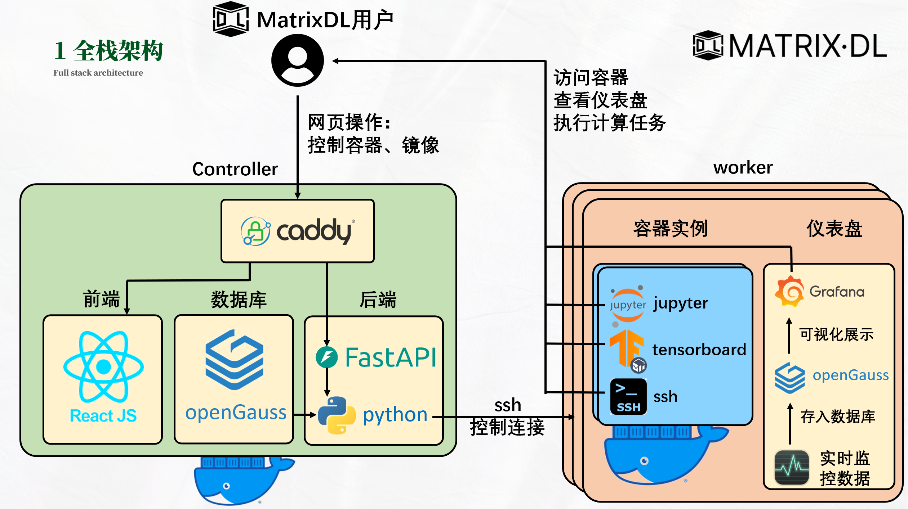

主页
简介

MatrixDL (Matrix Deep Learning) 是一个算力市场平台，帮助管理本地私有服务器集群，并以容器化的方式来为多用户提供计算服务
本项目的灵感主要来源于AutoDL算力云，同时也是数据库大作业作品
MatrixDL致力于提供简单易用的云端算力，为用户的炼丹保驾护航：
- 提供预装cuda、pytorch的镜像，环境配置便捷
- 提供jupyter、ssh等多种容器访问方式
- 支持tensorboard端口转发
- 提供实时展示设备状态的grafana仪表盘
- 容器间能够共享常用数据集，如ImageNet, ucf101等
视频demo
开源
MatrixDL完全开源，所有开发仓库位于 SysuMatrixDL 组织下，若干仓库如下：
frontend 和 backend 均使用 github actions 自动化打包上传镜像到 ghcr.io/sysumatrixdl 下。它们的镜像发布为:
-
ghcr.io/sysumatrixdl/frontend
-
ghcr.io/sysumatrixdl/backend
开发和部署中还需要两个镜像为:
-
ghcr.io/sysumatrixdl/opengauss
-
ghcr.io/sysumatrixdl/grafana
架构
MatrixDL由单个控制结点(controller)和多个工作结点(worker)组成，架构图如下

控制结点
用户的所有网页请求会发往控制结点，由caddy实现反向代理，分别发往前端和后端处理
在控制结点上，前端由react实现，后端由python的FastAPI库实现
在控制结点上运行有一个openGauss数据库，管理整个系统运行的必要数据
控制节点通过ssh安全连接到工作结点，执行容器、镜像的管理指令
工作结点
工作结点以docker容器的形式运行用户创建的实例，容器中运行jupyter, ssh等服务，并且提供tensorboard的端口转发，用户可以通过工作结点的ip和指定端口访问容器
为了便于用户了解工作结点的运行状态，每个工作结点上都运行有一个openGauss数据库。本工作结点的实时运行状态数据，包括CPU，内存，网络，IO，GPU等，会以固定的时间间隔存到数据库中。
借助grafana，可以为用户提供美观的前端仪表盘。每个工作结点上的grafana会连接到本结点的数据库，执行查询操作，并绘制图表展示实时运行数据。
开发者
如果您对本项目有任何疑问，或者有部署需求，欢迎联系开发者：2743880348@qq.com